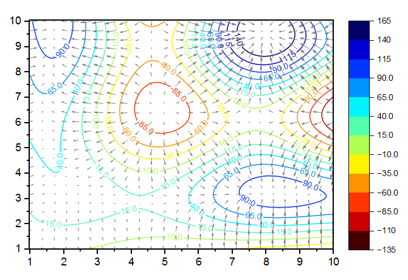

Matrix: Eine Matrix von Z-Werten
Arbeitsblatt: XYZ-Spalten
Wählen Sie die gewünschten Daten aus.
Wählen Sie .
ContQuiver.otpu
CONTQUIVERXYZ.optu
(installiert im Origin-Programmordner)
Das Konturliniendiagramm mit Farbverlaufsvektor ist eine Grafik, in der ein Konturliniendiagramm (oder Köcherdiagramm) durch einen Farbverlaufsvektor überlagert wird.
Die X-Funktion plot_mquiver oder plot_xyzquiver wird verwendet, um ein Diagramm wie dieses zu erstellen:
Wenn der Diagrammtyp Konturlinie mit Farbverlaufsvektor gewählt ist, besteht die Ausgabe in einem Arbeitsblatt mit XYWG-Spalten für den Farbverlaufsvektor. Zuerst verwendet die X-Funktion plot_mquiver die Gradientenfunktion, um die Gradientenmatrix in beide Richtungen (U und V) zu ermitteln, und überträgt dann U und V in die XYWG-Spalten und gibt sie in einem Arbeitsblatt aus. Sie zeichnet eine Kontur ausgehend von der Quellmatrix und zeichnet einen XYWG-Vektordiagramm basierend auf dem Ergebnisblatt. Die Option Dichte kann verwendet werden, um die gewünschte Dichte der Vektorlinien festzulegen.
Wenn der Diagrammtyp Kontur mit Feldlinien ist, besteht die Ausgabe aus zwei Matrixobjekten. Zuerst verwendet die X-Funktion plot_mquiver die Gradientenfunktion, um die negative Gradientenmatrix in beide Richtungen (U und V) zu ermitteln, und gibt dann U und V als zwei Matrixobjekte aus. Sie zeichnet eine Kontur ausgehend von der Quellmatrix und zeichnet einen Feldliniendiagramm basierend auf U und V.
Für XYZ-Daten wird das Bedienelement Punkte nach Inkrement überspringen anstatt der Option Dichte für "Kontur+Vektor“ gezeigt. Ein Punkt wird beibehalten und N-1 Punkte übersprungen (N ist die Einstellung). Wenn die Gesamtanzahl der Punkte 900(30*30) überschreitet, wird N automatisch auf ceil(number of points/900,1) gesetzt. Verwenden Sie dann die reduzierten XY-Punkte, um die Vektordaten zu ermitteln. Wenn die Gesamtanzahl kleiner ist als 900, setzen Sie N = 1. Das bedeutet, dass keine Punkte übersprungen werden und der ursprüngliche XY-Punkt verwendet wird, um den Vektor für die ursprünglichen Datenpunkte zu ermitteln.
Für die Feldlinien bietet dieses Hilfsmittel das Bedienelement Anzahl der Punkte in X-Richtung, Anzahl der Punkte in Y-Richtung. Standardmäßig werden sie auf Count(unique(x/y)) gesetzt. Ermitteln Sie dann die Matrix mit min_x, max_x, np_x, min_y, max_y, np_y und verwenden Sie diese Matrix, um das Matrixergebnis für die Feldlinien zu erhalten.